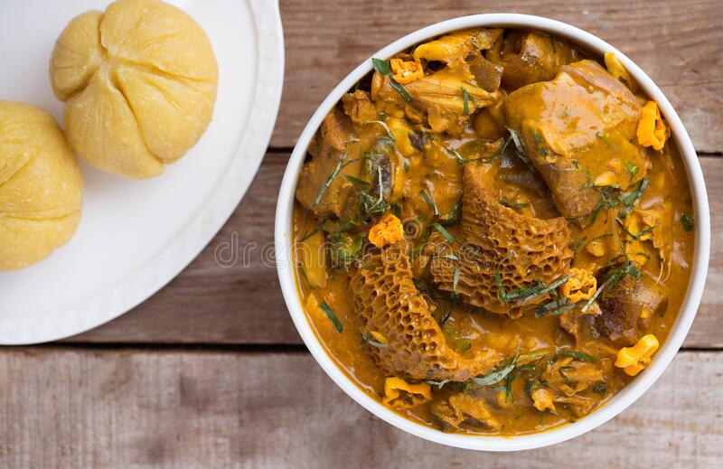
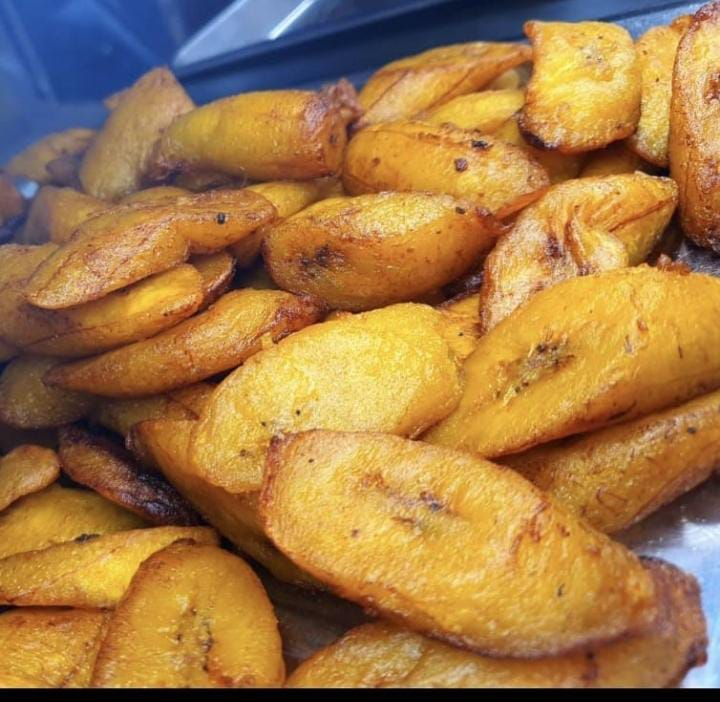
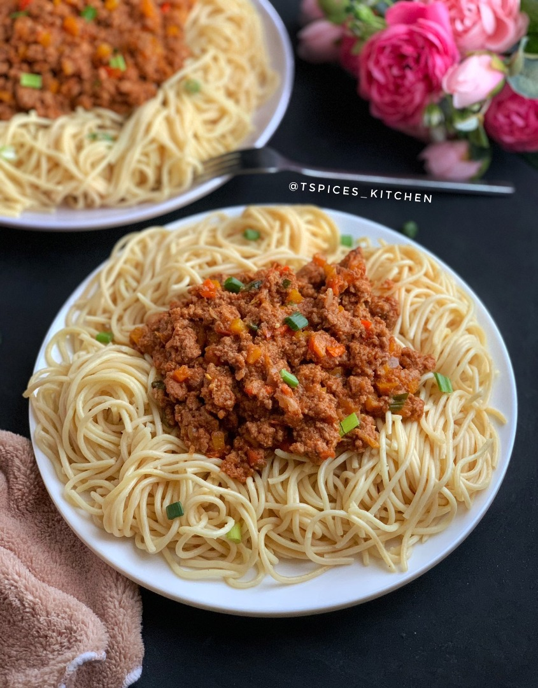

Oha Soup

Oha soup also referred to as ora soup is native to the South Eastern Nigeria. This soup is prepared with oha
leaves and highly sorted for, due to its unique delicious taste.
It is very easy to prepare and also not time consuming once you can make it.
Moreover, it is a very special soup prepared mostly during festivals and occasions.
The soup is usually thickened with cocoyam (Taro or Malanga) paste and served with pounded yam, fufu, eba or
semolina etc.
Ingredients for Oha Soup
|
S/N
|
Ingredients
|
Measurements
|
|
1
|
Oha Leaves and uziza leaves
|
2 Bunches
|
|
2
|
cocoyam/achi/ofor/
|
6tsps
|
|
3
|
Salt
|
pinch
|
|
4
|
fufu/semolina/pounded yam/garri(eba)
|
2 cups
|
|
5
|
Crayfish
|
2tsps
|
|
6
|
Dry Fish
|
as desired
|
|
7
|
Stock Fish
|
as desired
|
|
8
|
Asorted Meat
|
as desired
|
|
9
|
ogiri
|
1/3 tsps (optional)
|
|
10
|
Onion
|
1 ball
|
|
11
|
Fresh Pepper
|
as desired
|
|
12
|
Seasoned Cubes
|
2 cubes
|
|
13
|
Palm Oil
|
4tsps
|
Method of Preparation
Preparation time :50 Minutes
- Wash the meat, season with stock cubes, salt, pepper, water and onions and cook until tender.
- Use boiling water to wash the stockfish and cook separately in another pot. (It is optional to cook the
stockfish together with the meat).
- De-bone the dry fish and wash thoroughly with hot water(set aside).
- Once the meat is tenderly cooked, add the red palm oil into the pot.
- Pour 100ml of hot water into the powdered cocoyam, stir properly to form a thick paste.
- However, if using the raw cocoyam tubers, cook tenderly and blend to form a smooth paste. Otherwise dissolve
the ofor/achi in palm oil.
- Afterwards, add the cocoyam into the pot of soup, add the remaining ingredients except the oha leaves and
allow to cook until the soup has thickened to your choice.
- Wash and cut the oha leaves and uziza leaf in big size before adding into the pot of soup.
- Allow to simmer for 3mins, stir and bring down from fire.
- For the semolina, pour water in a clean pot and allow to boil.
- Stir in the semolina into the boiling water and continue stirring until thickened.
- Sprinkle hot water over it and allow to cook for another 3 mins before bringing down from fire.
- Serve warm with either pounded yam, fufu or wheat.
List of other Meal

Bean cake and Pap

Eba and ogbono
Plantain
Spaghetti

Yam and sauce

Arabian rice